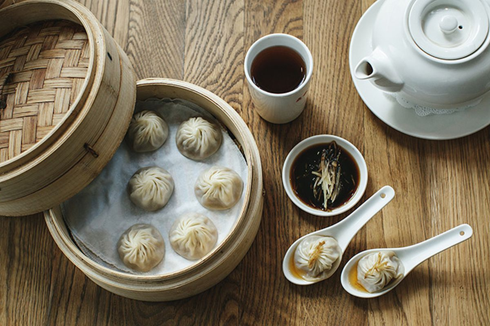

Din Tai Fung
Address: 700 Bellevue Way NE Ste 280 Bellevue, WA 98004
Phone: (425) 698-1095
Hours: 11:00 am - 9:30 pm
Din Tai Fung was founded in Taipei, Taiwan in 1958 as a cooking oil retail shop. In 1972, it transitioned into a full fledged restaurant specializing in soup dumplings and noodles. The restaurant was soon winning rave reviews from all over the world. The tradition of Din Tai Fung continues today in its locations in the United States, Taiwan, Japan, Singapore, South Korea, Australia, Indonesia, Malaysia, China, and Thailand.
